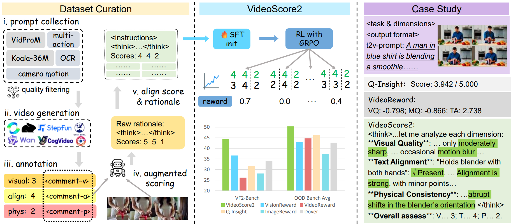
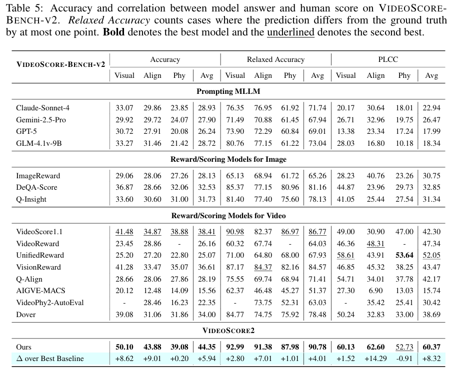
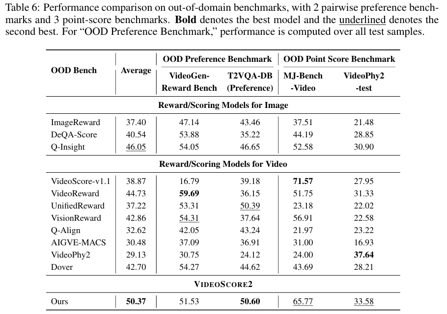
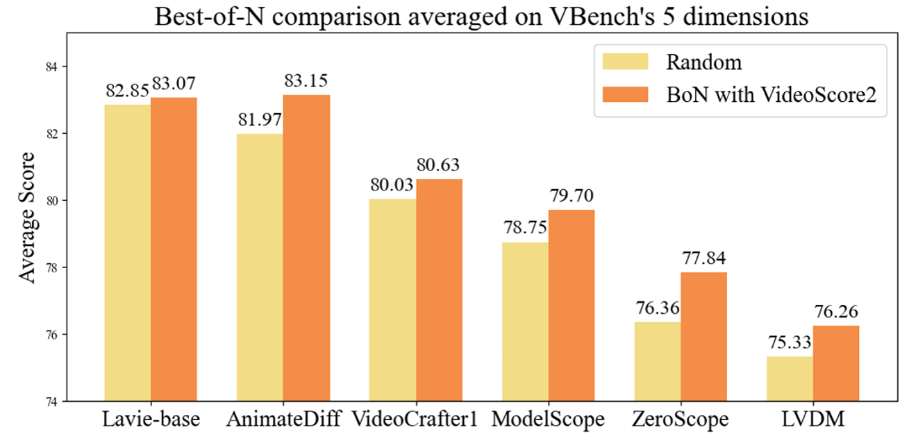
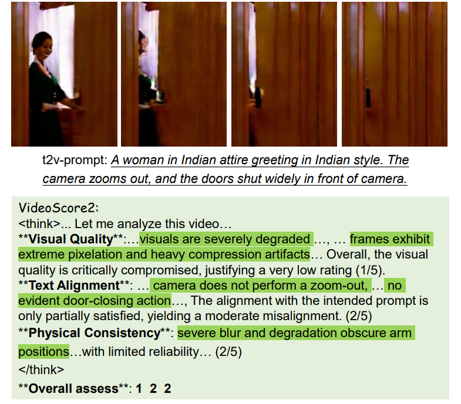
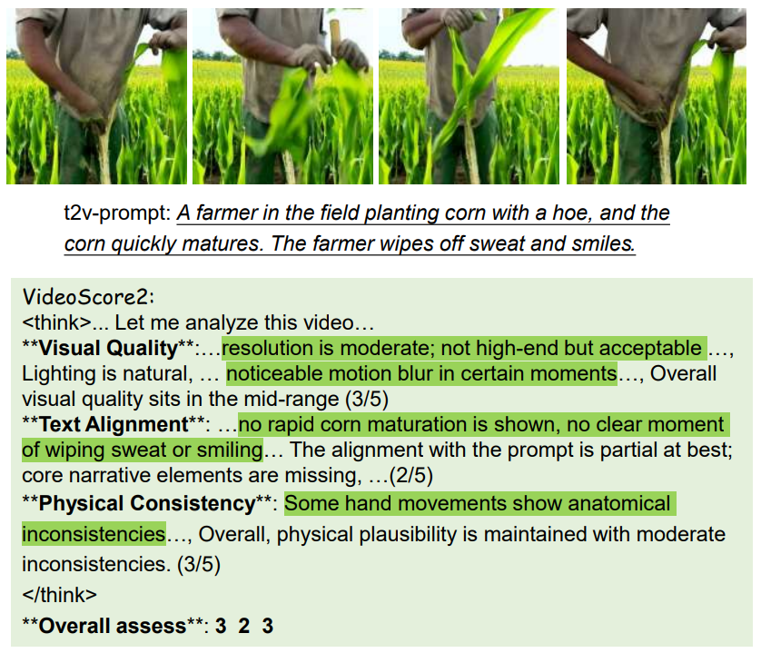
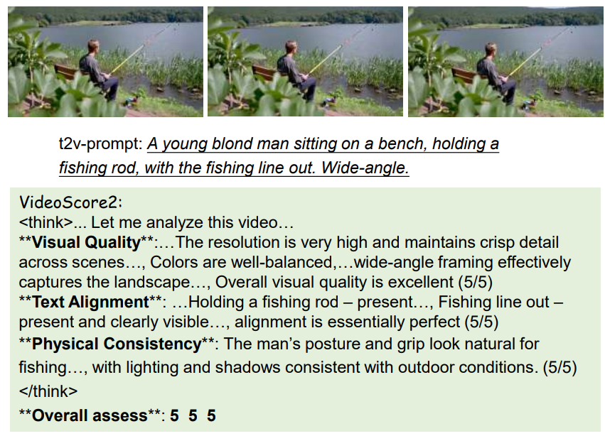

Recent advances in text-to-video generation have produced increasingly realistic and diverse content, yet evaluating such videos remains a fundamental challenge due to their multi-faceted nature encompassing visual quality, semantic alignment, and physical consistency. Existing evaluators and reward models are limited to single opaque scores, lack interpretability, or provide only coarse analysis, making them insufficient for capturing the comprehensive nature of video quality assessment. We present VideoScore2, a multi-dimensional, interpretable, and human-aligned framework that explicitly evaluates visual quality, text-to-video alignment, and physical/common-sense consistency while producing detailed chain-of-thought rationales. Our model is trained on a large-scale dataset VideoFeedback2 containing 27,168 human-annotated videos with both scores and reasoning traces across three dimensions, using a two-stage pipeline of supervised fine-tuning followed by reinforcement learning with Group Relative Policy Optimization (GRPO) to enhance analytical robustness. Extensive experiments demonstrate that VideoScore2 achieves superior performance with 44.35 (+5.94) accuracy on our in-domain benchmark VideoScore-Bench-v2 and 50.37 (+4.32) average performance across four out-of-domain benchmarks (VideoGenReward-Bench, VideoPhy2, etc), while providing interpretable assessments that bridge the gap between evaluation and controllable generation through effective reward modeling for Best-of-N sampling

VideoScore2 is trained on the VideoFeedback2 dataset containing 27K human-annotated videos with both scores and rationales across three dimensions. We adopt a two-stage pipeline: first, supervised fine-tuning (SFT) on Qwen2.5-VL-7B-Instruct to establish format-following and scoring ability; then, reinforcement learning with Group Relative Policy Optimization (GRPO) to further align model outputs with human judgment and enhance analytical robustness. Compared to VideoScore (v1), VS2 introduces interpretable scoring for three dimensions (Visual Quality, Text Alignment, Physical/Common-sense Consistency) and CoT-style rationales, achieving stronger generalization on out-of-domain benchmarks while providing transparent and human-aligned video evaluation.
We test VideoScore2 on the test set of VideoFeedback2, containing 500 videos with human scores from three dimensions. Below we show the results of some scoring/reward models for image or video, like VideoReward, VisionReward, Q-Insight, DeQA-Score, and MLLM-prompting methods like Claude-Sonnet-4, GPT-5, Gemini-2.5-Pro, etc and our VideoScore2.

We further test on four out-of-domain (OOD) benchmarks: two pairwise preference (VideoGenReward-Bench and T2VQA-DB (preference version)) and two point score (MJ-Bench-Video and Video-Phy2-test). Preference benchmark results include ties. As shown in Table below, while VideoScore2 is not always the top model on each benchmark, it achieves the highest overall average.

We evaluate VideoScore2 with best-of-n (BoN) sampling (n = 5), where the model selects the best video among candidates. Six T2V models of moderate or poor quality are used, avoiding very strong ones to highlight the BoN effect. For 500 prompts, each model generates 500 × 5 videos. Comparison on VBench shows BoN consistently outperforms random sampling, confirm ing that VideoScore2 effectively guides higher-quality selection.




@misc{he2025videoscore2thinkscoregenerative,
title={VideoScore2: Think before You Score in Generative Video Evaluation},
author={Xuan He and Dongfu Jiang and Ping Nie and Minghao Liu and Zhengxuan Jiang and Mingyi Su and Wentao Ma and Junru Lin and Chun Ye and Yi Lu and Keming Wu and Benjamin Schneider and Quy Duc Do and Zhuofeng Li and Yiming Jia and Yuxuan Zhang and Guo Cheng and Haozhe Wang and Wangchunshu Zhou and Qunshu Lin and Yuanxing Zhang and Ge Zhang and Wenhao Huang and Wenhu Chen},
year={2025},
eprint={2509.22799},
archivePrefix={arXiv},
primaryClass={cs.CV},
url={https://arxiv.org/abs/2509.22799},
}